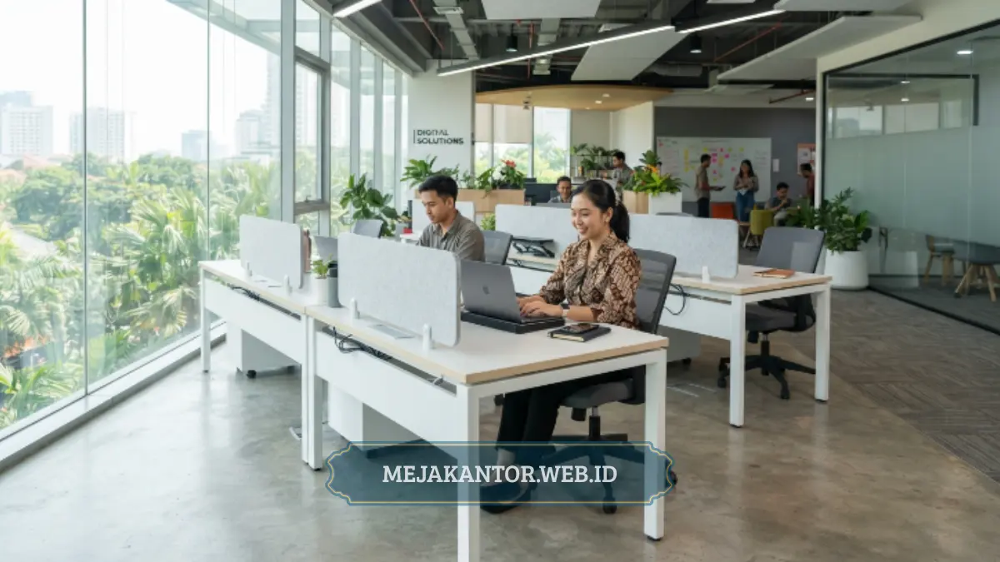

Meja Staff MSO-140L adalah meja kerja staff berukuran 140 cm yang dirancang untuk kebutuhan kantor korporat dengan struktur rangka kokoh dan permukaan kerja yang luas. Produk ini cocok untuk perusahaan yang ingin menghadirkan ruang kerja rapi, tahan lama, dan efisien secara anggaran. Tim mejakantor.web.id menyediakan Meja Staff MSO-140L dengan opsi konfigurasi yang dapat disesuaikan kebutuhan ruang.
Meja Staff MSO-140L dirancang untuk workstation staff dengan panjang 140 cm, ideal untuk ruang kerja standar maupun open-plan office. Struktur rangka besi dan permukaan top table tahan gores menjadikan meja ini pilihan yang efisien untuk pemakaian jangka panjang. Cocok digunakan berjajar (cluster workstation) maupun individual, menyesuaikan tata letak kantor. Tersedia dalam beberapa pilihan warna dan finishing yang menyesuaikan identitas visual kantor. Dapat dipesan dalam jumlah unit besar melalui mejakantor.web.id dengan proses konsultasi kebutuhan ruang.
Apa Itu Meja Staff MSO-140L?
Meja Staff MSO-140L standalone menjawab kebutuhan kantor akan meja kerja fungsional berukuran menengah. Secara umum, meja ini termasuk dalam kategori meja kerja staff (staff desk) yang diproduksi menggunakan kombinasi material particle board berlapis melamine untuk top table serta rangka metal untuk kaki penyangga.
Kode "MSO-140L" merujuk pada lini produk staff office dengan panjang permukaan kerja sekitar 140 cm, ukuran yang umum digunakan pada workstation kantor berskala menengah hingga besar.
Desain Meja Staff MSO-140L mengutamakan efisiensi ruang tanpa mengorbankan kenyamanan kerja. Permukaan meja yang cukup luas memungkinkan penempatan monitor, laptop, dokumen kerja, dan peralatan pendukung lain secara bersamaan.
Rangka kaki metal pada meja ini umumnya dilapisi cat powder coating yang tahan terhadap goresan dan korosi ringan, sehingga cocok digunakan pada lingkungan kantor dengan intensitas pemakaian tinggi.
Untuk Siapa Meja Staff MSO-140L Ini Cocok Digunakan?
Meja Staff MSO-140L cocok digunakan oleh perusahaan yang sedang membangun atau merenovasi ruang kerja staff, baik kantor baru maupun kantor yang melakukan ekspansi tim. Divisi pengadaan dan tim general affairs (GA) sering memilih tipe meja ini karena rasio antara ukuran, kekuatan struktur, dan efisiensi biaya yang seimbang.
Selain perusahaan korporat, instansi pemerintahan, lembaga pendidikan, dan co-working space juga banyak menggunakan meja staff dengan spesifikasi serupa MSO-140L. Ukuran 140 cm dinilai cukup ideal karena tidak terlalu memakan ruang seperti meja director, namun tetap memberikan area kerja yang nyaman dibandingkan meja staff berukuran lebih kecil.
Kapan Waktu Tepat Menggunakan Meja Staff MSO-140L?
Waktu paling tepat mempertimbangkan Meja Staff MSO-140L adalah saat kantor melakukan penataan ulang ruang kerja, penambahan headcount tim, atau standardisasi furnitur antar-divisi. Perusahaan yang sedang menyusun anggaran pengadaan furnitur tahunan juga dapat menjadikan meja ini sebagai opsi standar workstation staff karena konsistensi ukuran memudahkan perencanaan tata ruang.

Situasi lain yang relevan adalah ketika kantor beralih dari sistem meja individual acak menuju konsep cluster workstation yang lebih rapi. Meja Staff MSO-140L dengan ukuran seragam memudahkan penyusunan formasi berjajar 2, 4, atau 6 unit dalam satu cluster kerja.
Mengapa Meja Staff MSO-140L Penting bagi Efisiensi Kantor?
Pemilihan meja kerja yang tepat memengaruhi produktivitas dan efisiensi ruang secara langsung. Berdasarkan data umum industri desain interior perkantoran, tata ruang kerja yang terstandardisasi dapat meningkatkan efisiensi pemanfaatan area hingga 15-20 persen dibandingkan penataan meja yang tidak seragam.
Meja Staff MSO-140L, dengan ukuran yang konsisten, mendukung efisiensi ini karena memudahkan perencanaan layout dan jalur sirkulasi antar-meja. Selain aspek ruang, konsistensi desain meja staff juga berkontribusi pada citra profesional kantor. Ruang kerja yang tertata rapi dengan furnitur seragam memberikan kesan terorganisir.
Apa Manfaat Utama Meja Staff MSO-140L bagi Perusahaan?
Manfaat utama Meja Staff MSO-140L terletak pada kombinasi daya tahan, fleksibilitas tata letak, dan efisiensi anggaran pengadaan dalam jumlah besar.
Daya Tahan Material untuk Pemakaian Jangka Panjang
Top table Meja Staff MSO-140L umumnya menggunakan particle board berkepadatan tinggi yang dilapisi melamine, sehingga tahan terhadap goresan ringan, noda, dan kelembapan pada pemakaian normal harian. Rangka kaki metal memberikan kestabilan struktur yang mampu menopang beban kerja standar.
Fleksibilitas Konfigurasi Tata Ruang
Ukuran 140 cm memberikan fleksibilitas dalam berbagai skema layout, baik formasi berhadapan, berjajar linear, maupun konfigurasi cluster berbentuk L atau U. Fleksibilitas ini memudahkan tim GA menyesuaikan tata ruang dengan luas kantor yang tersedia.
Efisiensi Biaya Pengadaan Massal
Untuk kantor dengan kebutuhan puluhan hingga ratusan unit, keseragaman spesifikasi Meja Staff MSO-140L memudahkan proses negosiasi harga grosir sekaligus mempercepat proses instalasi karena tidak memerlukan penyesuaian ukuran per unit.
Bagaimana Cara Kerja dan Pemasangan Meja Staff MSO-140L?
Meja Staff MSO-140L umumnya dikirim dalam kondisi knock-down (belum dirakit penuh) untuk efisiensi pengiriman, kemudian dirakit langsung di lokasi kantor oleh tim instalasi. Proses pemasangan mencakup penyambungan rangka kaki ke permukaan top table menggunakan baut dan bracket standar, dilanjutkan dengan pengecekan kestabilan.
Setelah rangka terpasang, tahap berikutnya adalah penataan sesuai layout ruang yang telah direncanakan sebelumnya, termasuk penyesuaian jalur kabel dan colokan listrik apabila kantor menggunakan sistem cable management terintegrasi. Proses ini umumnya diselesaikan dalam hitungan jam untuk skala kantor menengah.
Apa Kelebihan dan Kekurangan Meja Staff MSO-140L?
Setiap tipe meja staff memiliki karakteristik yang perlu dipertimbangkan sebelum pengadaan dalam skala besar.
Kelebihan:
- Ukuran 140 cm memberikan ruang kerja yang cukup luas tanpa memakan area berlebihan.
- Struktur rangka metal memberikan kestabilan tinggi dibandingkan meja berbahan kayu solid ringan.
- Cocok untuk berbagai konfigurasi tata ruang, dari individual hingga cluster.
- Harga per unit cenderung lebih efisien untuk pengadaan jumlah besar.
Kekurangan (perlu dipertimbangkan):
- Ukuran 140 cm mungkin kurang ideal untuk ruang kerja yang sangat terbatas; kantor dengan luas sempit dapat mempertimbangkan varian yang lebih kecil.
- Sebagaimana meja berbahan particle board pada umumnya, paparan air berlebihan dalam jangka panjang dapat memengaruhi kualitas permukaan apabila tidak dirawat dengan baik.
Bagaimana Cara Memilih Meja Staff MSO-140L yang Tepat?
Pemilihan Meja Staff MSO-140L yang tepat sebaiknya mempertimbangkan luas ruang kerja, jumlah staff, dan konsep tata letak kantor secara keseluruhan sebelum melakukan pemesanan. Langkah pertama adalah mengukur luas area kerja yang tersedia untuk memastikan formasi cluster yang direncanakan sesuai jarak sirkulasi ideal.
Langkah berikutnya adalah menentukan finishing warna yang selaras dengan identitas visual kantor, mengingat mejakantor.web.id umumnya menyediakan beberapa pilihan warna top table dan rangka. Terakhir, sebaiknya konsultasikan kebutuhan jumlah unit dan skema pengiriman kepada tim mejakantor.web.id agar proses pengadaan efisien.
Meja Staff MSO-140L merupakan pilihan yang seimbang antara ukuran, daya tahan, dan efisiensi biaya untuk kebutuhan workstation kantor korporat. Bagi tim pengadaan yang membutuhkan solusi meja staff dengan spesifikasi jelas, mejakantor.web.id siap membantu mulai dari konsultasi hingga pengiriman dan instalasi ke kantor Anda.

Mega Anggun
Penulis Konten & Spesialis Penataan Interior Kantor. Berpengalaman dalam memberikan tips ergonomi dan memilih furnitur terbaik untuk menunjang produktivitas kerja.